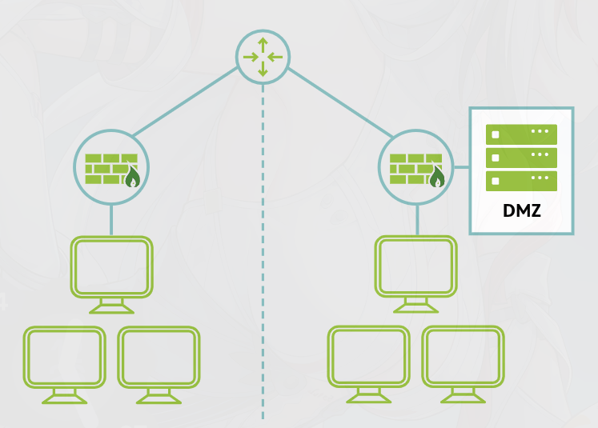

11. Network Segmentation Demilitarized Zone (DMZ)
Network segmentation means dividing a network into smaller parts to improve security. This helps stop a problem in one part of the network from easily spreading to the rest.
A DMZ (demilitarized zone) is a separate section of the network used for systems that need to be accessed from outside, such as public-facing servers. Instead of placing these systems directly inside the internal network, they are kept in this separate area.
The DMZ acts like a buffer between the internet and the internal network. Extra controls, such as secure switches or another firewall, are used to control what traffic can move between the DMZ and the internal network.
This way, even if a public-facing system is attacked, the attacker does not get direct access to the main internal network.

Main Idea
A DMZ is a separate network area that keeps outside-facing systems away from the internal network to reduce risk.